CRVI002138Chris Burden - Untitled

CRVI001392Paul Natkin - Lil' Ed & The Blues Imperials
Photograph by Paul Natkin
Photograph by Paul Natkin
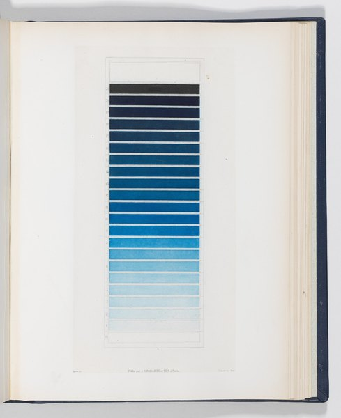
CRVI003484Michel Eugène Chevreul - Untitled
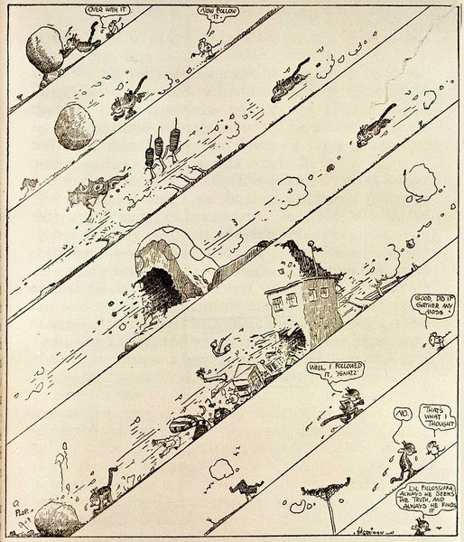
CRVI003485George Herriman - Untitled
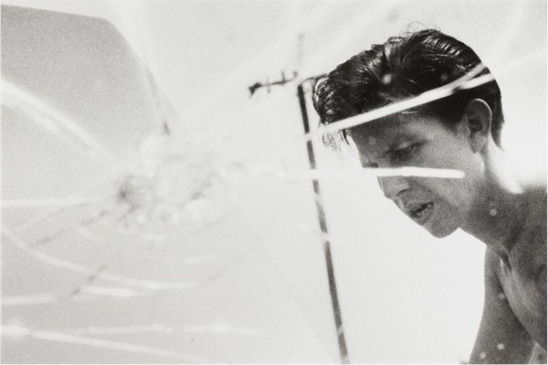
CRVI003078Larry Clark - Untitled
from Tulsa · 1970
from Tulsa · 1970

CRVI000800Joseph Beuys - [Beuys with a rose in a graduated cylinder]
Signed photograph
Signed photograph

CRVI001423Maurizio Cattelan - A Perfect Day
1999
1999

CRVI002748Unknown - Untitled (pink and white ruffles)

CRVI003068Barbara Kasten - Construct VI-C
1981
1981

CRVI001417William Claxton - Peggy Moffitt in Rudi Gernreich's “little boy” suit

CRVI001904Unknown - Three framed works, installation view

CRVI002136Unknown - Art for Life's Sake
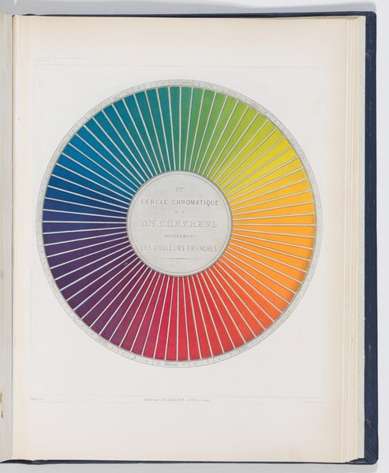
CRVI003480Michel Eugène Chevreul - Untitled

CRVI002289Cindy Sherman - Untitled Film Still #12
1977
1977

CRVI002001Zanele Muholi - Self-portrait with clothespins

CRVI001400Lorenza Böttner - Face Art
Lorenza Böttner · 1983 · black and white photograph · 1983
Lorenza Böttner · 1983 · black and white photograph · 1983

CRVI002728Unknown - Arco floor lamp
1962
1962
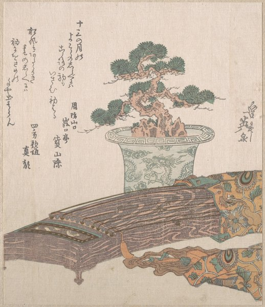
CRVI003447Keisai Eisen - Untitled

CRVI002111Bernd and Hilla Becher - Water Towers
1988
1988
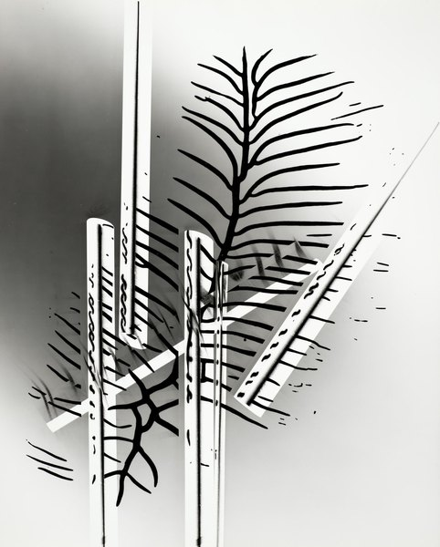
CRVI003151György Kepes - Kepes 122

CRVI003209Unknown - Untitled
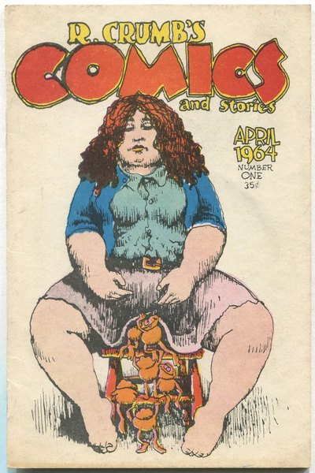
CRVI003488Robert Crumb - Untitled

CRVI002177Yasumasa Morimura - Self-portrait as Marilyn
1995
1995

CRVI000795Hannah Wilke - S.O.S. Starification Object Series (Curlers)
Gelatin silver print · 101.6 × 68.6 cm · 1974
Gelatin silver print · 101.6 × 68.6 cm · 1974
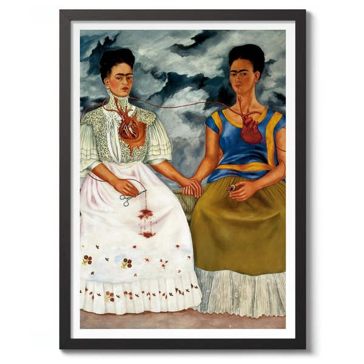
CRVI003431Frida Kahlo - Untitled

CRVI002817Karl Blossfeldt - Passionsblume (Passion Flower)
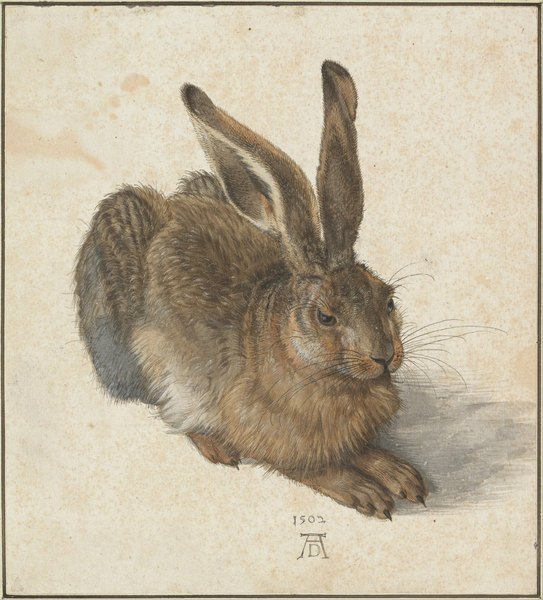
CRVI003463Albrecht Dürer - Untitled
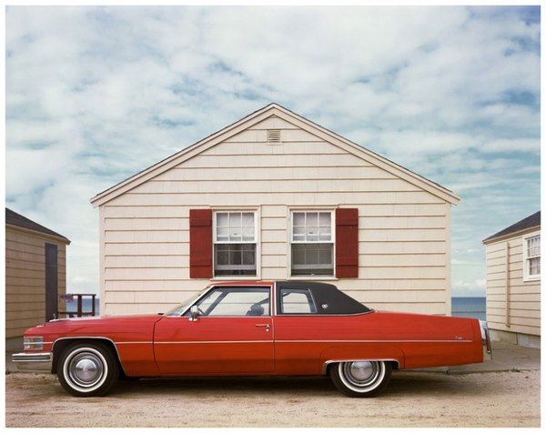
CRVI003360Joel Meyerowitz - Untitled

CRVI002085Wolfgang Tillmans - Portrait with guitar
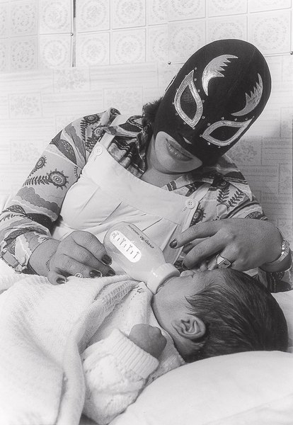
CRVI003043Lourdes Grobet - Briosa y bebé, México

CRVI002151Louise Lawler - Life After 1945 (distorted)

CRVI001259Christian Weber - Pharoah Sanders
Photograph by Christian Weber · GQ 'Jazz Giants' · 2016
Photograph by Christian Weber · GQ 'Jazz Giants' · 2016
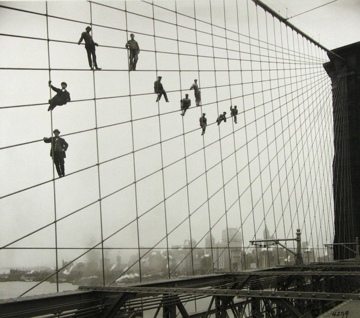
CRVI003386Eugene de Salignac - Untitled
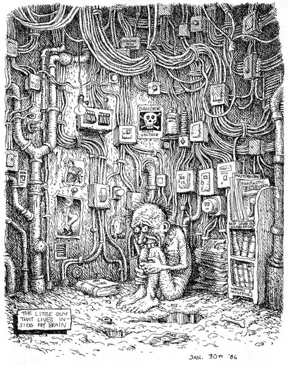
CRVI003489Robert Crumb - Untitled

CRVI000804Joseph Beuys - [Beuys seated on the cobbles]
Signed photograph
Signed photograph

CRVI002850John Heartfield - Self-portrait
1920
1920

CRVI002267Christo and Jeanne-Claude - L'Arc de Triomphe, Wrapped
2021
2021
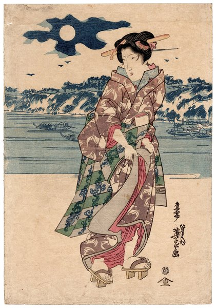
CRVI003448Keisai Eisen - Untitled

CRVI001436Unknown - Interior with striped walls and bentwood chairs

CRVI001422Unknown - Portrait of Maurizio Cattelan

CRVI000217Unknown - Infinity Mirror Room — Phalli's Field (or Floor Show)
Kusama standing in the work · via David Zwirner · 1965
Kusama standing in the work · via David Zwirner · 1965

CRVI002088Andreas Gursky - Bahrain I

CRVI002181Zhang Huan - 1/2

CRVI002157William Eggleston - Untitled (yellow building)

CRVI001952Unknown - A visitor before a Kusama Infinity Net
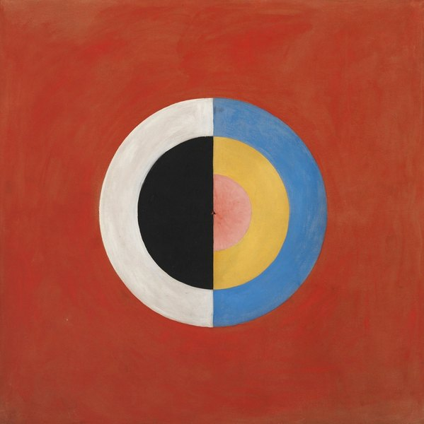
CRVI003478Hilma af Klint - Untitled

CRVI002156William Eggleston - Untitled
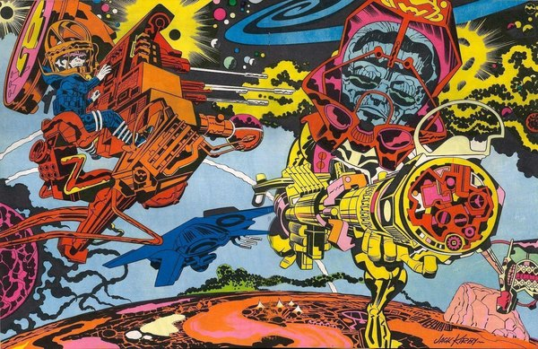
CRVI003461Jack Kirby - Untitled
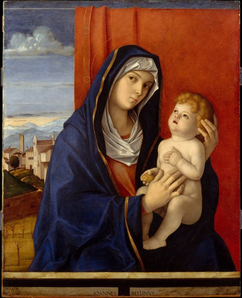
CRVI003469Giovanni Bellini - Untitled
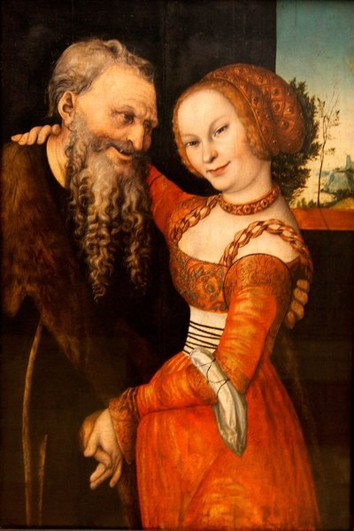
CRVI003467Lucas Cranach - Untitled
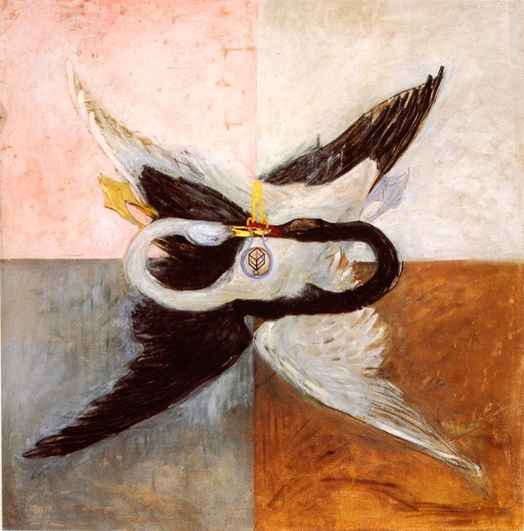
CRVI003477Hilma af Klint - Untitled
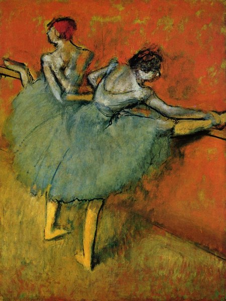
CRVI003422Edgar Degas - Untitled
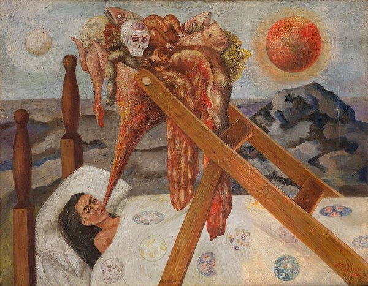
CRVI003429Frida Kahlo - Untitled
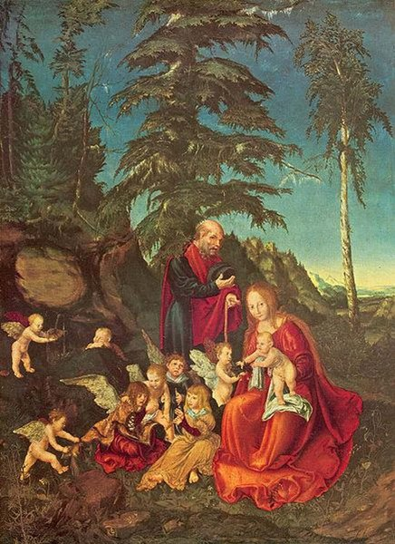
CRVI003466Lucas Cranach - Untitled
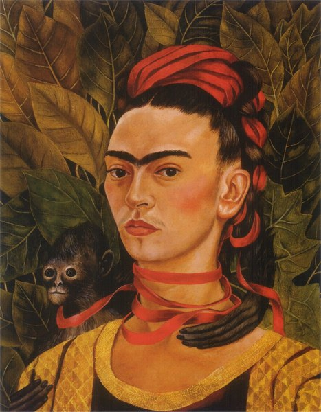
CRVI003433Frida Kahlo - Untitled
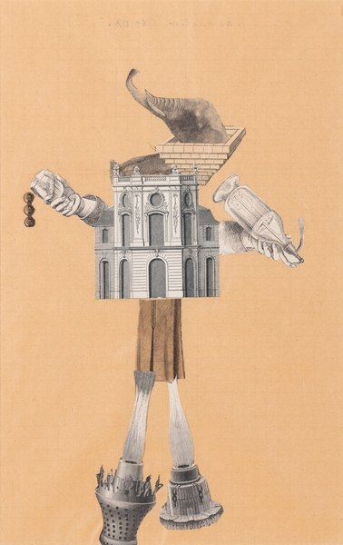
CRVI003435André Breton - Untitled

CRVI002178Yasumasa Morimura - Self-portrait after Frida Kahlo
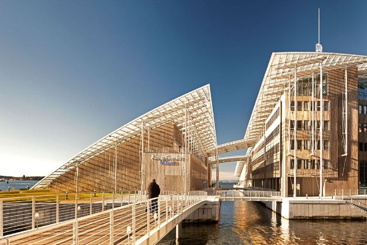
CRVI003428Renzo Piano - Untitled

CRVI001919Ana Mendieta - Untitled (Fetish Series, Iowa)
1977
1977

CRVI002740Unknown - Untitled (face with orange hair and red lips)

CRVI002158Nan Goldin - Untitled

CRVI003063Keyezua - Fortia
2017
2017
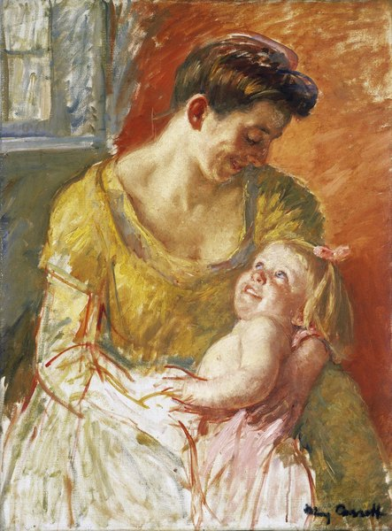
CRVI003455Mary Cassatt - Untitled
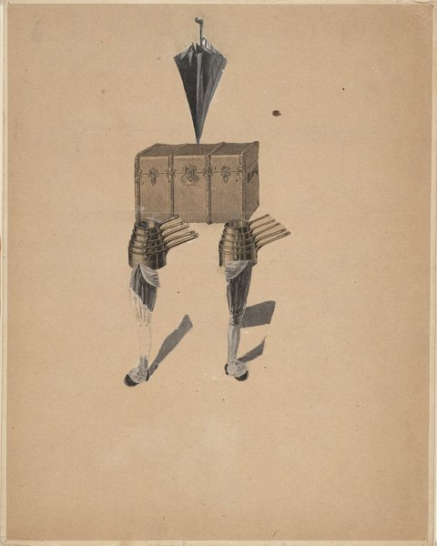
CRVI003436André Breton - Untitled
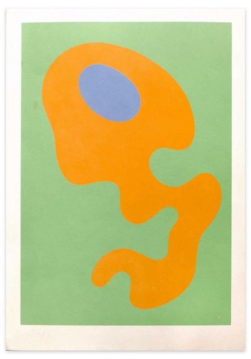
CRVI003475Hans Arp - Untitled
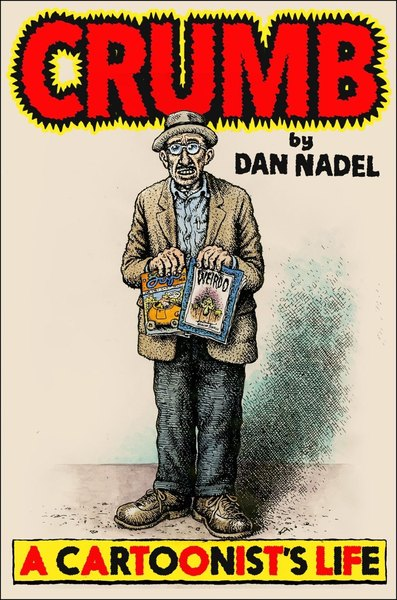
CRVI003487Robert Crumb - Untitled
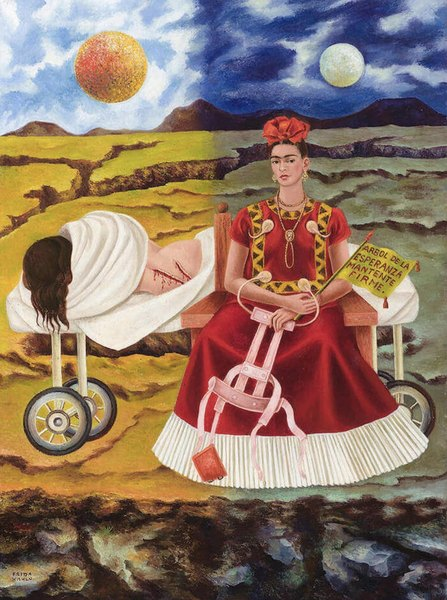
CRVI003430Frida Kahlo - Untitled
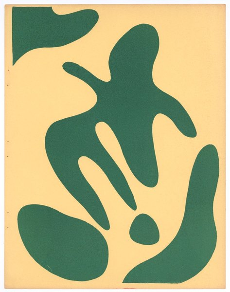
CRVI003476Hans Arp - Untitled

CRVI002089Andreas Gursky - Times Square, New York
1997
1997
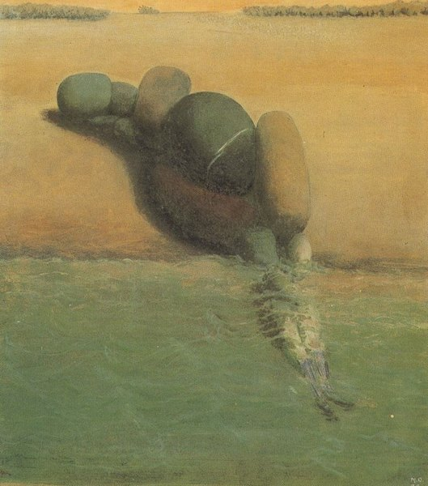
CRVI003473Meret Oppenheim - Untitled
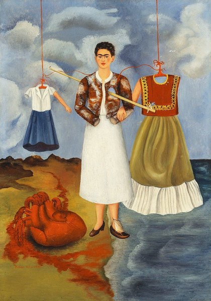
CRVI003434Frida Kahlo - Untitled
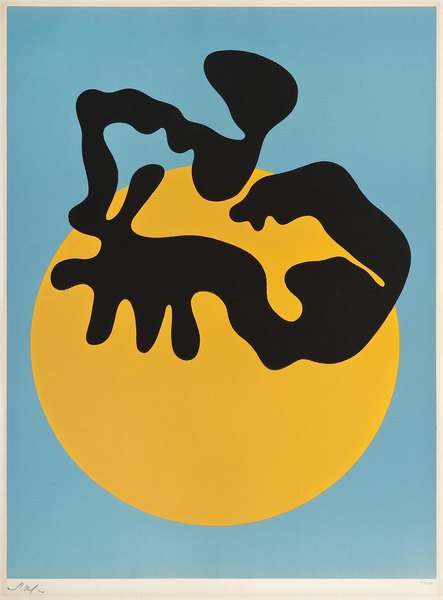
CRVI003474Hans Arp - Untitled

CRVI003241David LaChapelle - Untitled
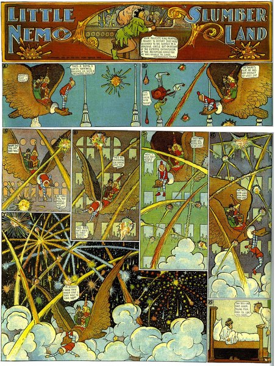
CRVI003490Winsor McCay - Untitled
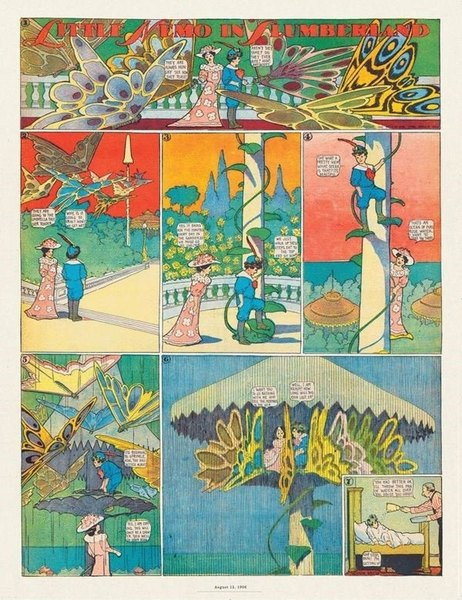
CRVI003492Winsor McCay - Untitled

CRVI002086Andreas Gursky - Shanghai
2000
2000
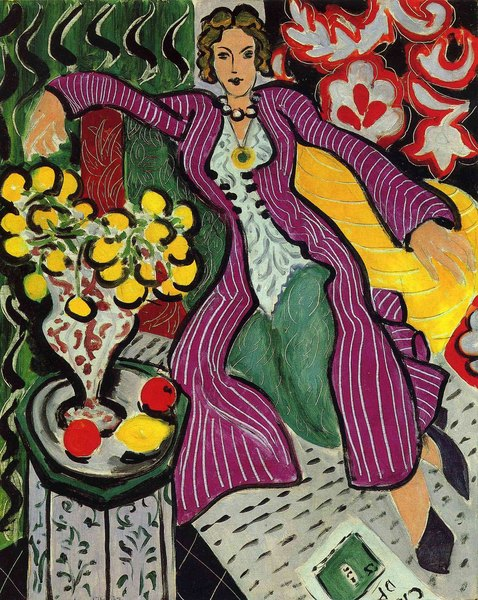
CRVI003424Henri Matisse - Untitled

CRVI001766Oskar Schlemmer - Costume from the Triadic Ballet
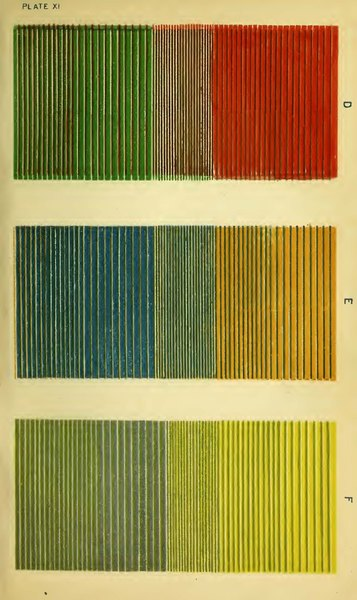
CRVI003481Michel Eugène Chevreul - Untitled
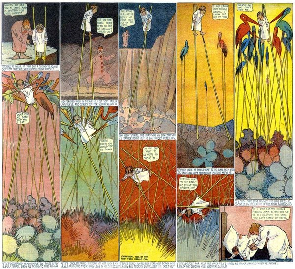
CRVI003494Winsor McCay - Untitled
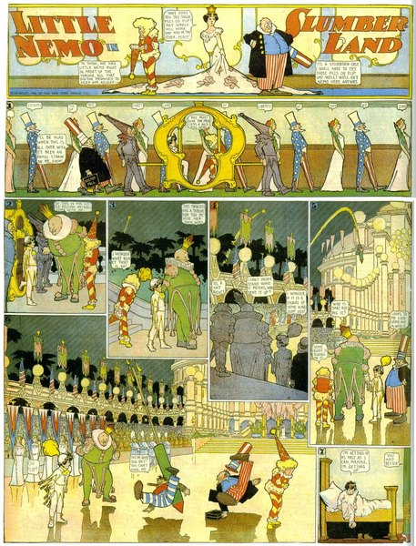
CRVI003491Winsor McCay - Untitled
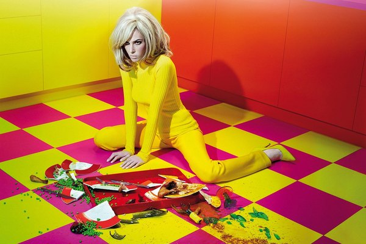
CRVI003242Miles Aldridge - Untitled

CRVI002140Matthew Barney - Untitled

CRVI002143Richard Prince - Untitled (Cowboy)
1989
1989
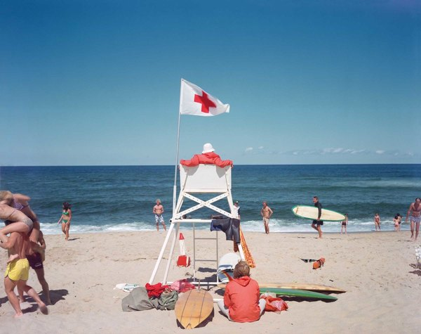
CRVI003359Joel Meyerowitz - Untitled

CRVI002743Unknown - Untitled (model in blue and violet)

CRVI000798Joseph Beuys - [Beuys with the Eurasienstab]
Signed photograph
Signed photograph

CRVI002745Unknown - Untitled (silver objects on blue)

CRVI002182Zhang Huan - Untitled
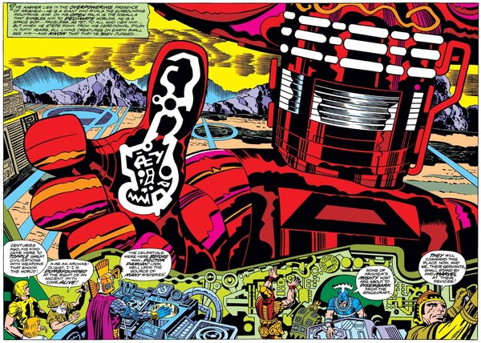
CRVI003460Jack Kirby - Untitled

CRVI001420Maurizio Cattelan - The Confessional
2026
2026

CRVI001887Mario Merz - Installation view, Palacio de Velázquez, Madrid

CRVI001943Vanessa Beecroft - Performance, long table

CRVI001344Unknown - Tron — the Solar Sailer deck, film still
Photographer unidentified · 1982
Photographer unidentified · 1982

CRVI001944Vanessa Beecroft - Performance, seated group

CRVI002283Michael Heizer - City

CRVI002179Yasumasa Morimura - Self-portrait after David's Napoleon
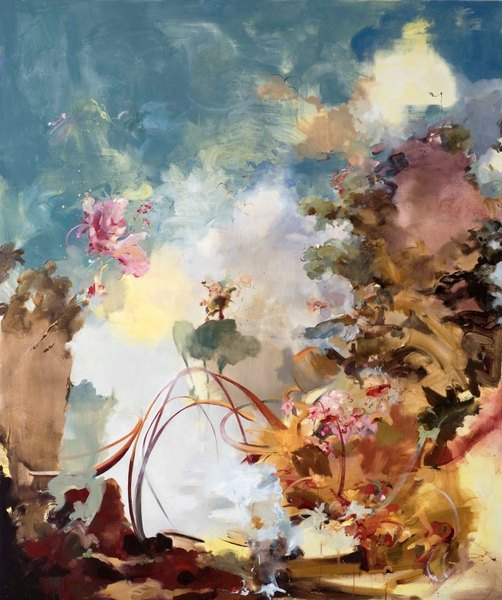
CRVI003483Flora Yukhnovich - Untitled

CRVI002250Unknown - A man leaning on Claes Oldenburg's Geometric Mouse

CRVI002325Unknown - Ed Ruscha with a box of daffodils
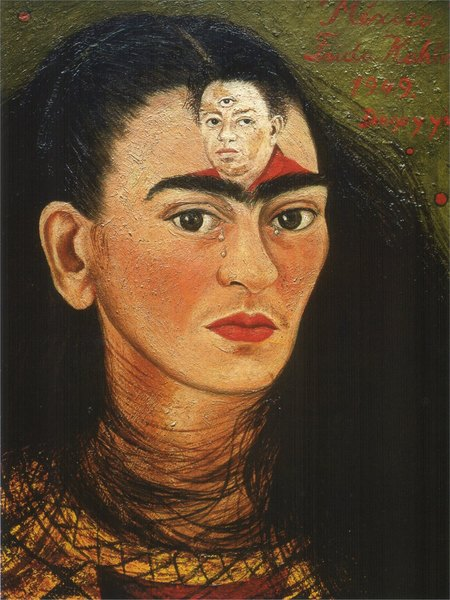
CRVI003432Frida Kahlo - Untitled
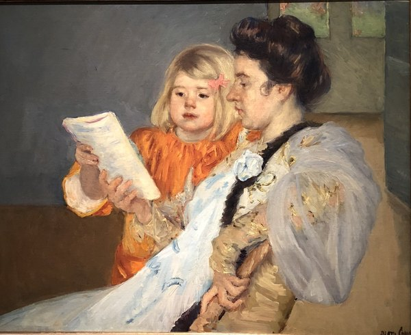
CRVI003456Mary Cassatt - Untitled
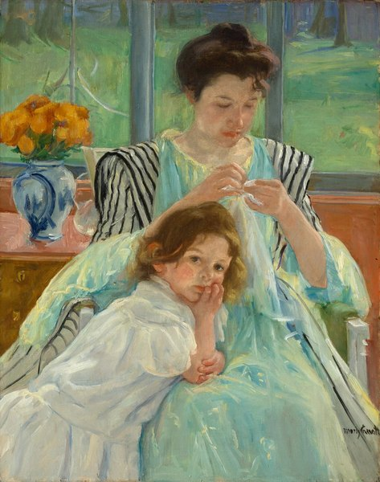
CRVI003454Mary Cassatt - Untitled
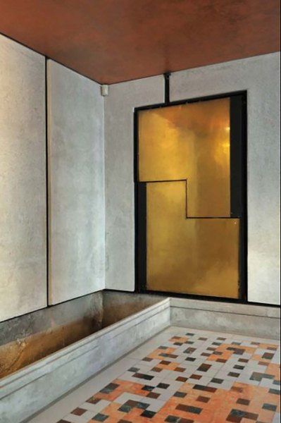
CRVI003425Carlo Scarpa - Untitled
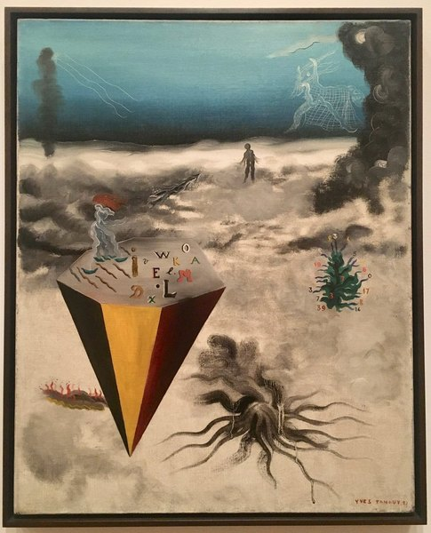
CRVI003437André Breton - Untitled
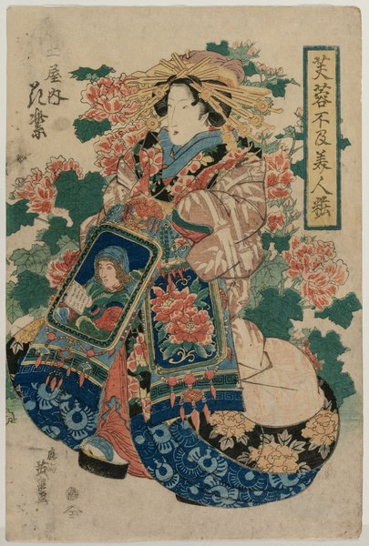
CRVI003444Keisai Eisen - Untitled
CRVI003482Flora Yukhnovich - Untitled
CRVI003452Katsushika Hokusai - Untitled
CRVI003443Keisai Eisen - Untitled
CRVI003450Keisai Eisen - Untitled
CRVI003479Hilma af Klint - Untitled
CRVI003458Katsushika Hokusai - Untitled
CRVI003445Keisai Eisen - Untitled
CRVI003465Albrecht Dürer - Untitled
CRVI003472Frida Kahlo - Untitled
CRVI003470Giovanni Bellini - Untitled
CRVI003493Winsor McCay - Untitled
CRVI002729Verner Panton - Panthella floor lamp
1971
1971
CRVI003375Marvin Newman - Untitled

CRVI001435Unknown - Interior with patterned walls and chequered door
CRVI003449Keisai Eisen - Untitled
CRVI003361Joel Meyerowitz - Untitled

CRVI002175Yasumasa Morimura - Self-portrait as a bride

CRVI001923Ana Mendieta - Untitled (feather work)
CRVI003459Katsushika Hokusai - Untitled

CRVI000218Motohiko Hasui - Kusama painting, Tokyo
Photograph by Motohiko Hasui · at the media preview of the Yayoi Kusama Museum · 2017
Photograph by Motohiko Hasui · at the media preview of the Yayoi Kusama Museum · 2017

CRVI001325Unknown - Tron — light cycles, film still
Photographer unidentified · 1982
Photographer unidentified · 1982
CRVI003438André Breton - Untitled
CRVI003457Edgar Degas - Untitled

CRVI002266Christo and Jeanne-Claude - Wrapped Reichstag
1995
1995
CRVI003421Paul Éluard - Untitled

CRVI002013Cao Fei - Duotopia

CRVI002322Unknown - Tauba Auerbach wearing a glass necklace
CRVI003268Unknown - Untitled
CRVI003343Superstudio - Untitled

CRVI002087Andreas Gursky - Pyongyang

CRVI002742Unknown - Untitled (red feathered figure)

CRVI001487Man Ray - Black and White (Noire et blanche)
1926
1926

CRVI002759Unknown - Barkley L. Hendricks photographing

CRVI002150Louise Lawler - Pollyanna (adjusted to fit)
2007/2008/2012
2007/2008/2012
CRVI003442Keisai Eisen - Untitled

CRVI001921Ana Mendieta - Untitled (Glass on Body Imprints)

CRVI002133Carolee Schneemann - Sequence of falling figures

CRVI001419Unknown - Two boys in the sea beside a boat

CRVI001800Unknown - Blue sponge sculpture

CRVI002226László Moholy-Nagy - Xanti Schawinsky on a Bauhaus Balcony
CRVI003464Albrecht Dürer - Untitled

CRVI002816Paul Outerbridge - Ide Kragen (Ide Collar)
1922
1922

CRVI000801Joseph Beuys - [Beuys pointing]
Portrait photograph
Portrait photograph
CRVI003358Jamel Shabazz - Untitled

CRVI002741Unknown - Untitled (bob and lip necklace)

CRVI001525Dorothea Lange - Pea Pickers Line Up on Edge of Field at Weigh Scale, near Calipatria, Imperial Valley, California, February
1939, printed ca. 1972
1939, printed ca. 1972

CRVI002290Cindy Sherman - Untitled Film Still #17
1979
1979
CRVI003369Steve Schapiro - Untitled
CRVI003368Steve Schapiro - Untitled

CRVI002139Vito Acconci - Untitled
CRVI003169Anton Corbijn - Untitled
CRVI003356Jamel Shabazz - Untitled
CRVI003462Jack Kirby - Untitled
CRVI003367Steve Schapiro - Untitled

CRVI002288Cindy Sherman - Untitled Film Still #10
1977
1977
CRVI003376Marvin Newman - Untitled
CRVI003373Arnold Newman - Untitled

CRVI002820Laure Albin-Guillot - Untitled (woman in a metal mask)

CRVI001418Unknown - Photograph published in The New Yorker
2022
2022

CRVI001911Michael Heizer - Rift #1
Jean Dry Lake, Nevada · 1968
Jean Dry Lake, Nevada · 1968

CRVI002746Unknown - Untitled (two figures in circuit-board headpieces)

CRVI002172Nasreen Mohamedi - Untitled

CRVI001953Marina Abramović and Ulay - Rest Energy
CRVI003365Ralph Gibson - Untitled

CRVI000222Evelyn Hofer - Kusama with her stuffed fabric works
Photograph by Evelyn Hofer · among the sewn phalluses of her room-filling installations · 1964
Photograph by Evelyn Hofer · among the sewn phalluses of her room-filling installations · 1964
CRVI003446Keisai Eisen - Untitled

CRVI002744Unknown - Untitled (model in a silver hood)

CRVI002008Shirin Neshat - Guardians of Revolution

CRVI002293Cindy Sherman - Untitled Film Still #45
1979
1979
CRVI003029Steven Arnold - Laborer in the Skies of God
CRVI003030Steven Arnold - Inseminating the Marvelous
1987
1987

CRVI001581Ralston Crawford - Torn election poster (Buckley)

CRVI001922Ana Mendieta - Untitled (earth-body work)

CRVI002308Carrie Mae Weems - Untitled, from The Kitchen Table Series
1990
1990
CRVI003453Katsushika Hokusai - Untitled
CRVI003372Arnold Newman - Untitled

CRVI001256Unknown - Alice Coltrane, studio portrait
Photographer unidentified
Photographer unidentified
CRVI002823Albert Renger-Patzsch - Ein Knotenpunkt der Fachwerkbrücke Duisburg-Hochfeld
1928
1928
CRVI003366Ralph Gibson - Untitled

CRVI003195Dora Maar - The Years Lie in Wait for You
1935
1935

CRVI002241Unknown - Johannes Itten
CRVI003357Jamel Shabazz - Untitled

CRVI001999Zanele Muholi - Self-portrait

CRVI002132Carolee Schneemann - Untitled
CRVI003077Larry Clark - Untitled
from Tulsa, limited edition with gelatin silver print
from Tulsa, limited edition with gelatin silver print

CRVI002002Zanele Muholi - Self-portrait with clothespin headdress

CRVI002000Zanele Muholi - Self-portrait with tubing

CRVI002268Unknown - Yoko Ono holding a glass sphere

CRVI001152Unknown - John Coltrane playing into a dressing-room mirror
Photographer unidentified · c. 1964
Photographer unidentified · c. 1964
CRVI003370Margaret Bourke-White - Untitled
CRVI003363Saul Leiter - Untitled

CRVI002291Cindy Sherman - Untitled Film Still #21
1979
1979

CRVI002418Gustav Klutsis - Self-portrait with a camera
1926
1926

CRVI002009Shirin Neshat - Rebellious Silence
CRVI003381Andreas Feininger - Untitled

CRVI003229Unknown - Untitled
1961
1961

CRVI002225László Moholy-Nagy - Oskar Schlemmer in Ascona
1926
1926

CRVI002159Robert Mapplethorpe - Irises
1986
1986
CRVI003371Arnold Newman - Untitled

CRVI001526Walker Evans - Alabama Cotton Tenant Farmer's Wife
1936, printed c. 1962
1936, printed c. 1962
CRVI003067Larry Clark - Untitled, from the series 42nd Street Boys
1978
1978
CRVI003168Anton Corbijn - Untitled

CRVI003231Unknown - Untitled

CRVI001910Adrian Piper - Catalysis IV
1970
1970
CRVI003451Keisai Eisen - Untitled

CRVI002819Karl Blossfeldt - Untitled (teasel)
CRVI003426Kenzo Tange - Untitled

CRVI002302Carrie Mae Weems - Untitled (Woman and daughter with makeup)
1990
1990
CRVI003066Larry Clark - Untitled, from the portfolio Tulsa
1971, printed 1980
1971, printed 1980
CRVI003378Andreas Feininger - Untitled

CRVI002306Carrie Mae Weems - Untitled (Woman standing alone)
1990
1990
CRVI003486Fred Moore - Untitled

CRVI002747Paolo Roversi - Untitled, for System magazine issue 14

CRVI002821Albert Renger-Patzsch - Untitled (rope and cordage)
CRVI003027Steven Arnold - Transmitigating Inspiration
1986
1986

CRVI001255Unknown - Bill Evans, hands behind his head
Photographer unidentified
Photographer unidentified

CRVI001779Unknown - Saburō Murakami passing through paper screens, 2nd Gutai Exhibition, Tokyo
1956
1956

CRVI001924Ana Mendieta - Imagen de Yagul
Silueta series · 1973
Silueta series · 1973
CRVI003374Lewis Hine - Untitled
CRVI003471Giovanni Bellini - Untitled

CRVI003194Dora Maar - Sans titre (Main-coquillage)
1934
1934
CRVI003423Edgar Degas - Untitled
CRVI003377Andreas Feininger - Untitled
CRVI003439Edward Weston - Untitled

CRVI001754László Moholy-Nagy - Berlin Radio Tower
1928
1928
CRVI003383Joseph Rodriguez - Untitled
CRVI003031Steven Arnold - Dig In Your Garden

CRVI002010Shirin Neshat - Untitled (Aim)

CRVI002307Carrie Mae Weems - Untitled, from The Kitchen Table Series
1990
1990

CRVI002292Cindy Sherman - Untitled Film Still #23
1979
1979

CRVI001909Adrian Piper - Catalysis III
1970
1970
CRVI003032Steven Arnold - High Priestess of Mirrors
1990
1990

CRVI002254Unknown - Claes Oldenburg in The Store
1961
1961
CRVI003441Keisai Eisen - Untitled
CRVI003382Joseph Rodriguez - Untitled

CRVI001972Carrie Mae Weems - Untitled (Playing harmonica)
1990
1990
CRVI003362Alfred Stieglitz - Untitled

CRVI001346Lynn Goldsmith - Woman in a striped jumpsuit on a first-aid box
Photographer unidentified
Photographer unidentified

CRVI002304Carrie Mae Weems - Untitled, from The Kitchen Table Series
1990
1990
CRVI003420Lee Miller - Untitled

CRVI001349Unknown - Patti Smith with a camera, and Lynn Goldsmith
Photographer unidentified
Photographer unidentified
CRVI003152György Kepes - The Two Faces of July

CRVI002327Jerry McMillan - Ed Ruscha with six of his books on his head
1970
1970

CRVI002305Carrie Mae Weems - Untitled, from The Kitchen Table Series
1990
1990
CRVI003440Edward Weston - Untitled
CRVI003385Joseph Rodriguez - Untitled
CRVI003364Ralph Gibson - Untitled

CRVI002303Carrie Mae Weems - Untitled (Woman standing alone)
1990
1990
CRVI003287Yousuf Karsh - Self-Portrait
1952
1952

CRVI001973Carrie Mae Weems - Untitled (Woman and daughter with makeup)

CRVI002818Karl Blossfeldt - Untitled (star-form seed head)

CRVI002007Shirin Neshat - Unveiling

CRVI002824Toni Schneiders - Schienenspinne (Rail Spider)
1950
1950

CRVI002160Robert Mapplethorpe - Self-portrait

CRVI002822Albert Renger-Patzsch - Untitled (chimneys)
CRVI003026Steven Arnold - Sea of Transition
1983
1983

CRVI002235Oskar Schlemmer - Das Triadische Ballett — costume group
1926
1926

CRVI002161Robert Mapplethorpe - Orchid
CRVI003379Andreas Feininger - Untitled

CRVI001254Unknown - Thelonious Monk at the piano
Photographer unidentified
Photographer unidentified

CRVI002243Unknown - Johannes Itten in his Mazdaznan robe
CRVI003028Steven Arnold - Dreams of Transformation

CRVI002395Bruce Nauman - Self-Portrait as a Fountain
1966-67
1966-67
CRVI003384Joseph Rodriguez - Untitled

CRVI001334Lynn Goldsmith - Gene Simmons
Photograph by Lynn Goldsmith
Photograph by Lynn Goldsmith
CRVI003380Andreas Feininger - Untitled

CRVI002180Yasumasa Morimura - Self-portrait after Velázquez
CRVI002775Étienne-Jules Marey - Chronophotograph of a running man

CRVI001335Lynn Goldsmith - Tom Petty
Photograph by Lynn Goldsmith
Photograph by Lynn Goldsmith
CRVI003288Yousuf Karsh - Pablo Picasso
1954
1954
CRVI003149György Kepes - Untitled
1938
1938
CRVI003150György Kepes - Untitled
1939, printed 1940
1939, printed 1940

CRVI002749Ib Kamara - Untitled, from Family Affair for Browns
2020
2020
CRVI003167Anton Corbijn - Miles Davis
1985-1989
1985-1989
CRVI003468Lucas Cranach - Untitled

CRVI002176Yasumasa Morimura - Self-portrait after Vermeer